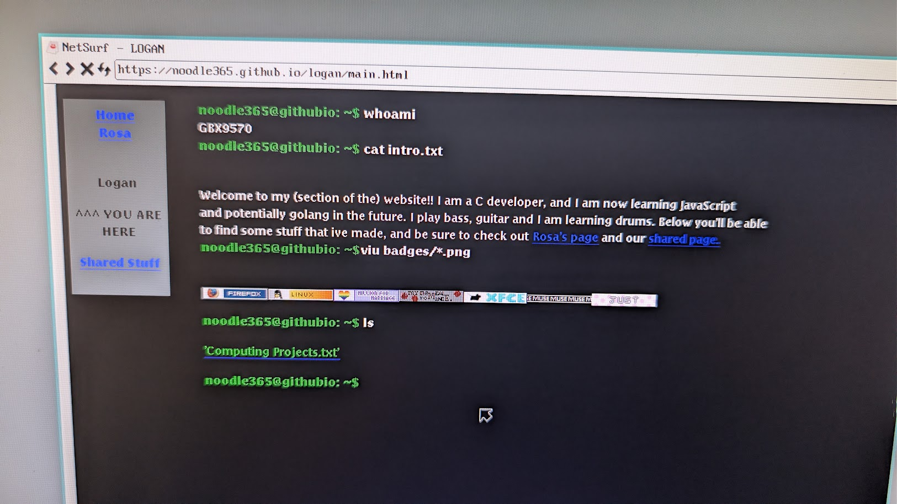
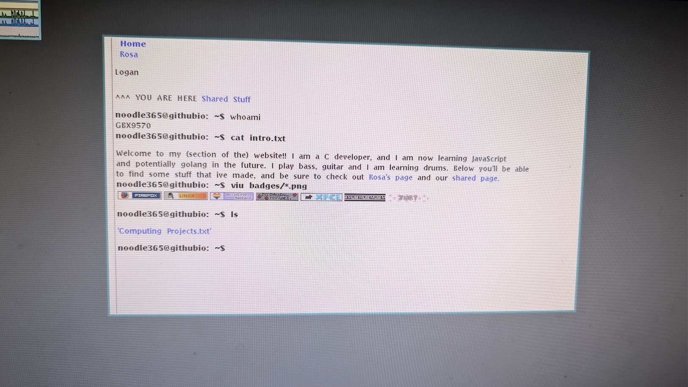

term % cat 'On The 'net.txt'


this very website that you are reading here is officially compatible(ish-kinda-not-really) with mothra!!that means the vast userbase of 3 using 9front/plan9 can finally access this incredible website. for a better
experience though netscape is clearly vastly superior. cool though!!
unfortunately animated antipixels won't play but its okay i didn't expect perfection from this operating system
expect to see 9dpm updates soon!! 9dpm